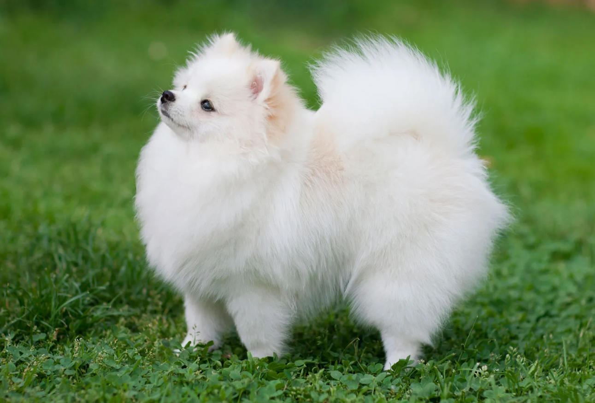

POMERANIAN
Weight:
7- 3 lbs.
Height :
10 in.
11 in.
Length:
Medium .
Color:
All colors and patterns allowed.
Longevity:
12 – 16 yrs.
Pomeranian personality
Pomeranians are generally perky, friendly little dogs. They do not seem to realize they are small in stature and will occasionally tackle large dogs or at least verbally threaten them!These are active little dogs that do need daily exercise, even if it is just a walk around the block. They are quite intelligent and do well in obedience competitions despite a small independent streak. As they age, they are more amenable to being truly lap dogs.Pomeranians are often good alert and alarm dogs and can be prone to excessive barking. They tend to be good with children, but children need to be cautioned that these are small dogs and not as sturdy as the larger breeds.
what to expect
Pomeranians are usually easy to keep, although some are finicky eaters. They do not have a tendency toward obesity, probably because of their active nature. The double coat does require some regular grooming attention once or twice weekly, with daily sessions during shedding season.Despite being small, Pomeranians do need regular exercise and thrive on training. They are very intelligent and enjoy learning tricks and performing. Poms generally get along well with other pets, but caution should be used mixing any toy breed with large breeds that might injure a toy dog accidentally. If raised with children they do quite well if not, they may be reserved. Children need to be reminded that these smaller dogs may not be as sturdy as larger dogs, and interactions should be supervised.Poms are excellent watchdogs with their alert attitude and their tendency to bark. They make very good companions for elderly folks because of their alertness and their small size.
History of the Pomeranian
The Pomeranian is considered to be a miniaturized Spitz-type dog. Germany, specifically Pomerania in the 1800s, seems to be the site of the first breeding programs, although these dogs were quite large. Queen Victoria became enamored of the breed from her dogs, the size was bred down even further to the toy dog we recognize today.Certainly the German spitz dogs must be ancestors of these charmers. Dogs were then chosen for smaller size and for the bright colors we see today instead of the standard gray or white spitz coloring. From the start, poms, as they are often referred to, have been companion dogs with a little bit of watchdog duty worked in.